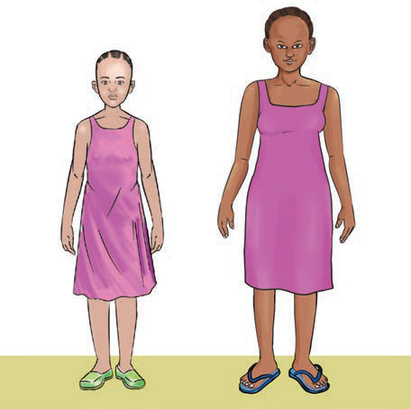

Activity 3
Examine Figure 6, then identify the physical changes that occur in girls during puberty.

Physical changes in girls during puberty include:
- (i) Growth and enlargement of breasts.
- (ii) Increased activity of sweat glands.
- (iii) Increased vaginal discharge.
- (iv) Growth of hair under the armpits and around the pubic area.
- (v) Increase in height and weight.
- (vi) Voice becoming softer.
- (vii) Appearance of pimples/acne on the face in some girls.
- (viii) Widening of hips.
- (ix) Maturation of eggs and the beginning of menstruation.
Menstrual cycle
Menstruation is a natural biological process of discharging blood mixed with mucus from the break down of lining of the uterus through the vagina. The onset of menstruation is a key sign of puberty in girls. Menstruation usually occurs once every month forming a part of the menstrual cycle in which one or more eggs mature.